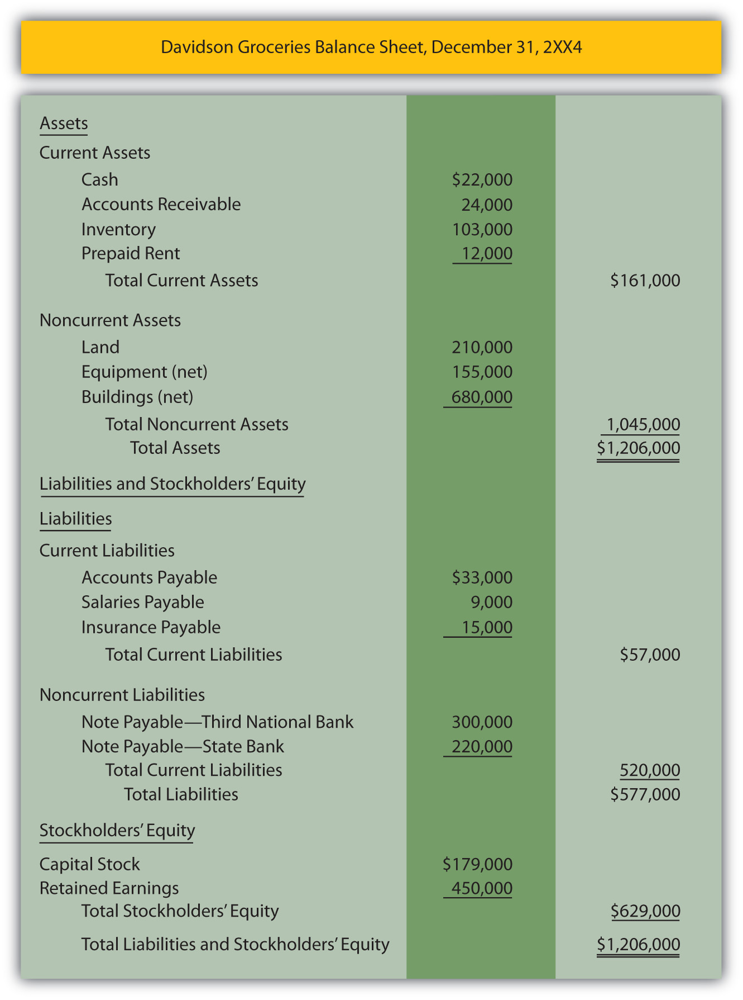

At the end of this section, students should be able to meet the following objectives:
Question: The third financial statement is the balance sheet. If a decision maker studies a company’s balance sheet (on its Web site, for example), what information can be discovered?
Answer: The primary purpose of a balance sheet is to report an organization’s assets and liabilities at a particular point in time. The format is quite simple. All assets are listed first—usually in order of liquidityLiquidity refers to the ease with which assets can be converted into cash. Thus, cash is normally reported first followed by investments in stock that are expected to be sold soon, accounts receivable, inventory, and so on.—followed by the liabilities. A picture is provided of each future economic benefit owned or controlled by the company (its assets) as well as its debts (liabilities).
A typical balance sheet is reported in Figure 3.5 "Balance Sheet" for Davidson Groceries. Note that the assets are divided between current (those expected to be used or consumed within the next year) and noncurrent (those expected to remain within the company for longer than a year). Likewise, liabilities are split between current (to be paid during the next year) and noncurrent (not to be paid until after the next year). This labeling aids financial analysis because Davidson Groceries’ current liabilities ($57,000) can be subtracted from its current assets ($161,000) to arrive at a figure often studied by interested parties known as working capital ($104,000 in this example). The current assets can also be divided by current liabilities ($161,000/$57,000) to determine the company’s current ratio (2.82 to 1.00), another figure calculated by many decision makers as a useful measure of short-term operating strength.
The balance sheet shows the company’s financial condition on one specific date. All the other financial statements report events occurring over a period of time (often a year or a quarter). The balance sheet discloses assets and liabilities as of the one specified date.
Figure 3.5 Balance SheetAs will be discussed in detail later in this textbook, noncurrent assets such as buildings and equipment are initially recorded at cost. This figure is then systematically reduced as the amount is moved gradually each period into an expense account over the life of the asset. Thus, balance sheet figures for these accounts are reported as “net” to show that only a portion of the original cost still remains recorded as an asset. This shift of the cost from asset to expense is known as depreciation and mirrors the using up of the utility of the property. On this company’s income statement—Figure 3.1 "Income Statement"—assume that depreciation for the period made up a portion of the “other” expense category.
Link to multiple-choice question for practice purposes: http://www.quia.com/quiz/2092603.html
Question: Considerable information is included on the balance sheet presented in Figure 3.5 "Balance Sheet". Assets such as cash, inventory, and land provide future economic benefits for a company. Liabilities for salaries, insurance, and the like reflect debts that are owed at the end of year. The $179,000 capital stock figure indicates the amount of assets that the original owners contributed to the business. The retained earnings balance of $450,000 was computed earlier in Figure 3.4 "Statement of Retained Earnings" and identifies the portion of the net assets generated by the company’s own operations over the years. For convenience, a general term such as “stockholders’ equity” or “shareholders’ equity” encompasses the capital stock and the retained earnings balances.
Why does the balance sheet balance? This agreement cannot be an accident. The asset total of $1,206,000 is exactly the same as the liabilities ($577,000) plus the two stockholders’ equity accounts ($629,000—the total of capital stock and retained earnings). Thus, assets equal liabilities plus stockholders’ equity. What creates that equilibrium?
Answer: The balance sheet will always balance unless a mistake is made. This is known as the accounting equationAssets = liabilities + stockholders’ equity. The equation balances because all assets must have a source: a liability, a contribution from an owner (contributed capital), or from operations (retained earnings).:
assets = liabilities + stockholders’ equity.Or if the stockholders’ equity account is broken down into its component parts,
assets = liabilities + capital stock + retained earnings.This equation stays in balance for one simple reason: assets must have a source. If a business or other organization has an increase in its total assets, that change can only be caused by (a) an increase in liabilities such as money being borrowed, (b) an increase in capital stock such as additional money being contributed by stockholders, or (c) an increase created by operations such as a sale that generates a rise in net income. There are no other ways to increase assets.
One way to understand the accounting equation is that the left side (the assets) presents a picture of the future economic benefits that the reporting company holds. The right side provides information to show how those assets were derived (from liabilities, from investors, or from operations). Because no assets are held by a company without a source, the equation (and, hence, the balance sheet) must balance.
assets = the total source of those assets
Question: The final financial statement is the statement of cash flows. Cash is so important to an organization and its financial health that a complete statement is devoted to presenting the changes that took place in that asset. As can be determined from the title, this statement provides a picture of the various ways in which the company generated cash during the year and the uses that were made of it. How is the statement of cash flows structured?
Answer: Outside decision makers place considerable emphasis on a company’s ability to create significant cash inflows and then wisely apply that money. Figure 3.6 "Statement of Cash Flows" presents an example of that information in a statement of cash flows for Davidson Groceries for the year ended December 31, 2XX4. Note that all the cash changes are divided into three specific sections: operating activitiesA statement of cash flow category used to disclose cash receipts and disbursements arising from the primary activities of the reporting organization., investing activitiesA statement of cash flow category used to disclose cash receipts and disbursements arising from an asset transaction other than one relating to the primary activities of the reporting organization., and financing activitiesA statement of cash flow category used to disclose cash receipts and disbursements arising from a liability or stockholders’ equity transaction other than one relating to the primary activities of the organization..
Figure 3.6 Statement of Cash FlowsThe cash flows resulting from operating activities are being shown here using the direct method, an approach recommended by the Financial Accounting Standards Board (FASB). This format shows the actual amount of cash flows created by individual operating activities such as sales to customers and purchases of inventory. In the business world, an alternative known as the indirect method is more commonly encountered. This indirect method will be demonstrated in detail in Chapter 17 "In a Set of Financial Statements, What Information Is Conveyed by the Statement of Cash Flows?".

Question: In studying the statement of cash flows, a company’s individual cash flows relating to selling inventory, advertising, selling land, buying a building, paying dividends, and the like can be readily identified. For example, when the statement indicates that $120,000 was the “cash received from bank on a loan,” a decision maker should have a clear picture of what happened. There is no mystery.
All the cash flows are divided into one of the three categories:
How are these distinctions drawn? On a statement of cash flows, what is the difference in an operating activity, an investing activity, and a financing activity?
Answer: Cash flows listed as operating activities relate to receipts and disbursements that arose in connection with the central activity of the organization. For Davidson Groceries, these cash changes resulted from the daily operations carried out by the convenience store and include selling goods to customers, buying merchandise, paying salaries to employees, and the like. This section of the statement shows how much cash the primary function of the business was able to generate during this period of time, a figure that is watched closely by many financial analysts. Eventually, a company is only worth the cash that it can create from its operations.
Investing activities report cash flows from events that (1) are separate from the central or daily operations of the business and (2) involve an asset. Thus, the amount of cash collected when either equipment or land is sold is reported within this section. A convenience store does not participate in such transactions as a regular part of operations and both deal with an asset. Cash paid to buy a building or machinery will also be disclosed in this same category. Such purchases do not happen on a daily operating basis and an asset is involved.
Like investing activities, the third section of this statement—cash flows from financing activities—is unrelated to daily business operations but, here, the transactions relate to either a liability or a stockholders’ equity balance. Borrowing money from a bank meets these criteria as does distributing a dividend to shareholders. Issuing stock to new owners for cash is another financing activity as is payment of a noncurrent liability.
Any decision maker can review the cash flows of a business within these three separate sections to receive a picture of how company officials managed to generate cash during the period and what use was made of it.
Link to multiple-choice question for practice purposes: http://www.quia.com/quiz/2092604.html
The balance sheet is the only financial statement created for a specific point in time. It reports a company’s assets as well as the source of those assets: liabilities, capital stock, and retained earnings. Assets and liabilities are divided between current and noncurrent amounts, which permits the company’s working capital and current ratio to be computed for analysis purposes. The statement of cash flows explains how the company’s cash balance changed during the year. All cash transactions are classified as falling within operating activities (daily activities), investing activities (nonoperating activities that affect an asset), or financing activities (nonoperating activities that affect either a liability or a stockholders’ equity account).
Following is a continuation of our interview with Kevin G. Burns.
Question: Warren Buffett is one of the most celebrated investors in history and ranks high on any list of the richest people in the world. When asked how he became so successful at investing, Buffett answered quite simply: “We read hundreds and hundreds of annual reports every year.”See http://www.minterest.com/warren-buffet-quotes-quotations-on-investing/.
Annual reports, as you well know, are the documents that companies produce each year containing their latest financial statements. You are an investor yourself, one who provides expert investment analysis for your clients. What is your opinion of Mr. Buffett’s advice?
Kevin Burns: Warren Buffet—who is much richer and smarter than I am—is correct about the importance of annual reports. Once you get past the artwork and the slick photographs and into the “meat” of these reports, the financial statements are a treasure trove of information. Are sales going up or down? Are expenses as a percentage of sales increasing or decreasing? Is the company making money? How are the officers compensated? Do they own stock in the company? Are there many pages of notes explaining the financial statements?
I actually worry when there are too many pages of notes. I prefer companies that don’t need so many pages to explain what is happening. I like companies that are able to keep their operations simple. Certainly, a great amount of important information can be gleaned from a careful study of the financial statements in any company’s annual report.
Joe talks about the five most important points in Chapter 3 "In What Form Is Financial Information Actually Delivered to Decision Makers Such as Investors and Creditors?".